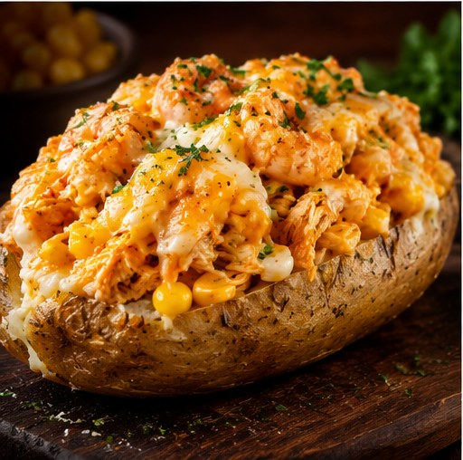

🥔 Feita para matar a fome
Batata recheada de verdade.
Batata macia, recheio cremoso e aquela combinação caprichada que transforma uma refeição comum em um momento especial.
★★★★★
Clientes que voltam para repetir
🔥 Recheio caprichado
😋 Cremosa por dentro
Nosso cardápio
Escolha seu próximo recheio favorito.
Algumas combinações para você conhecer. Os sabores e disponibilidade podem variar.
Recheio
de verdade
de verdade
Por que Gyn Batatas?
Uma batata simples, bem feita.
A Gyn Batatas nasceu para transformar um ingrediente tão conhecido em uma refeição completa, saborosa e generosa.
✓
Recheio generosoCombinações pensadas para você sair satisfeito.
✓
Sabor de comida de verdadeTextura, cremosidade e ingredientes que combinam.
✓
Pedido sem complicaçãoChame no WhatsApp e consulte sabores e disponibilidade.
Prova social
Quem prova, comenta.
Depoimentos reais devem ser inseridos aqui com autorização dos clientes.
★★★★★
“A batata é muito bem recheada e chega com uma apresentação caprichada. Dá vontade de pedir de novo.”
Cliente Gyn BatatasPedido pelo WhatsApp★★★★★
“Muito saborosa e cremosa. Uma opção que realmente sustenta e vale a experiência.”
Cliente Gyn BatatasCliente local★★★★★
“Gostei da praticidade para pedir. Falei pelo WhatsApp e foi bem tranquilo.”
Cliente Gyn BatatasPedido pelo WhatsApp
Deu fome?
Pedir agora no WhatsApp →
Então bora de batata recheada. 🥔
Chame a Gyn Batatas no WhatsApp e consulte o cardápio e a disponibilidade de hoje.